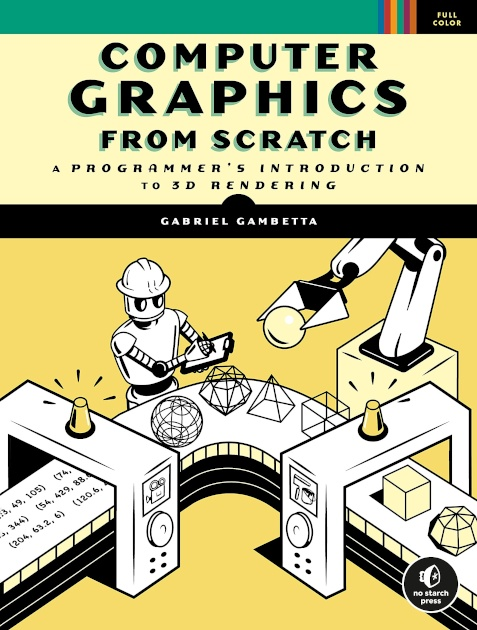

Computer Graphics from Scratch

Behind the beautiful imagery of the latest animated movie and the realistic environments of popular videogames lie some mysterious algorithms. Computer Graphics from Scratch aims to demystify these algorithms and shows you that computer graphics can be surprisingly simple.
This broad introductory book gives you an overview of the computer graphics field with a focus on two core areas of modern graphics: raytracing and rasterization. Links to interactive demos throughout bring the algorithms alive. Every algorithm is built up without the use of external libraries or APIs and is presented with language agnostic pseudocode, allowing anyone with a basic understanding of programming and high school math to follow along.
Computer Graphics from Scratch demystifies the algorithms used in modern graphics software with basic programming and high school math.
Table of Contents
Part I: Raytracing
Part II: Rasterization
- Lines
- Filled Triangles
- Shaded Triangles
- Perspective Projection
- Describing and Rendering a Scene
- Clipping
- Hidden Surface Removal
- Shading
- Textures
- Extending the Rasterizer